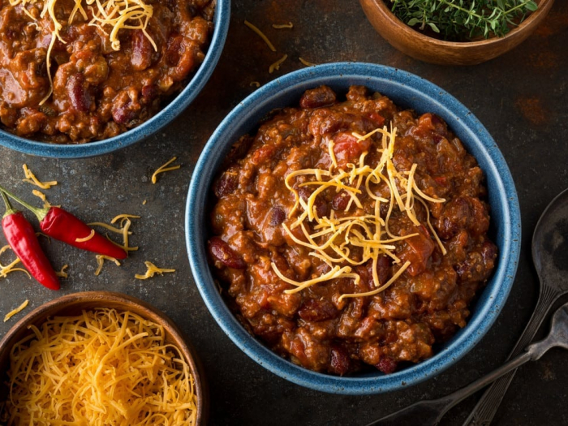

Easy Homemade Chili

This homemade chili is loaded with beef, beans, and crowd-pleasing flavor
Ingredients
- Beef: The recipe starts with a pound of ground beef. You can use ground turkey if you prefer
- Onion: Cooking a chopped onion with the ground meat adds tons of flavor
- Canned goods: You'll need a can of tomato sauce, a can of stewed tomatoes, and a can of kidney beans
- Spices: This homemade chili is spiced with chili powder, garlic powder, salt, and black pepper
How do you make it ?
co
- Cook the beef and the onion
- Add the remaining ingredients, then bring to a boil
- Reduce the heat and let simmer for 15 minutes.